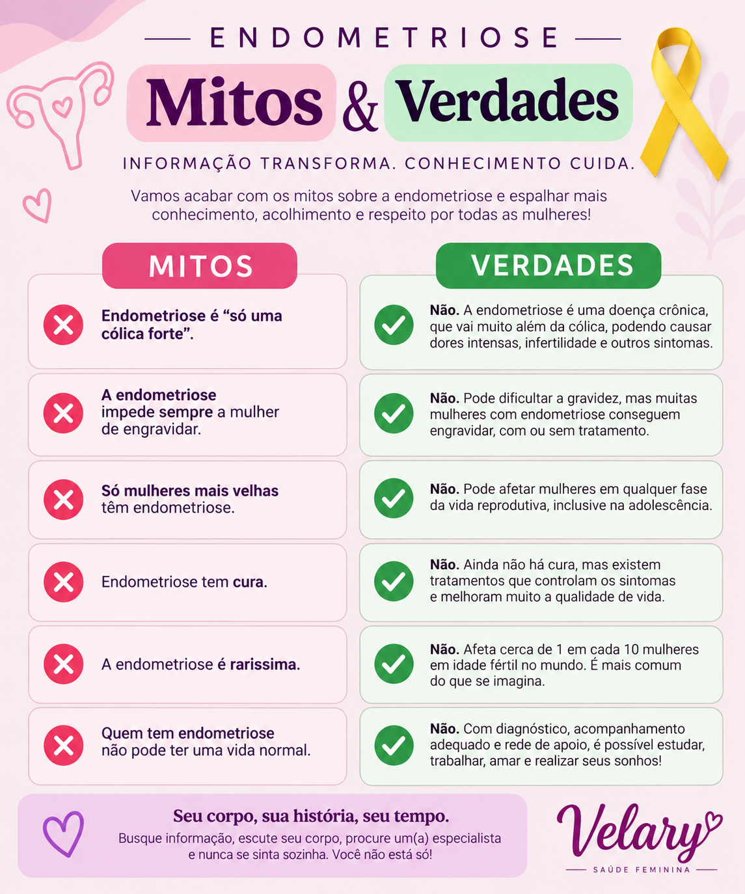

A avaliação começa pela conversa sobre sintomas e histórico. Um profissional pode solicitar exames de imagem conforme cada caso; os exames e preparos necessários devem ser orientados pelo serviço de saúde.
Não existe uma lista alimentar nesta página que trate endometriose. Para mudanças alimentares ou suplementos, converse com um profissional de saúde; evite restrições sem orientação individual.

Clique na imagem para ampliar
Muitos conceitos equivocados atrasam o diagnóstico. Sempre consulte especialistas para tirar suas dúvidas.
A endometriose pode dificultar a gravidez em algumas pessoas, mas não impede necessariamente uma gestação.
Não. Os sintomas variam; algumas pessoas têm dor fora da menstruação e outras podem não apresentar sintomas. Uma avaliação profissional é necessária para investigar.
A porta de entrada para avaliação no SUS é a Atenção Primária, como a UBS. A equipe pode iniciar o cuidado e encaminhar para serviço especializado quando necessário.